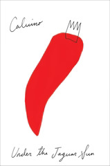

Under the Jaguar Sun
Sotto il sole giaguaro
Oh, how I wish Calvino had been able to finish the touch and sight stories to complete this collection (with or without the frame that Esther Calvino speculates about in the afterword). So much of Calvino's work is deeply visual, it's a joy to read his takes on the other senses.
"Under the Jaguar Sun" reads almost as a horror story, which is almost unique among what I've read of Calvino so far. There's an obvious thread of that here with Olivia's obsession with the fate of the remnants of sacrifice, and that's moderated only partially by the idea of mutual consumption that the story ends on.
"A King Listens" might've been an argument that restriction to a single sense leads to insanity; the king's hearing approached interoception at one point, where he thought of everything within earshot as part of his body. It's also a tragedy, though, as shown by the complete lack of attention to any sounds directed specifically at the king -- that is, we never read about anyone really talking to the king.
"The Name, the Nose" led me to think of the world of smell as a palimpsest. I don't know that the multiple timelines worked as well as they might've, but there was something to the overlaying of new on top of old, endlessly, that makes smell unique among our senses.